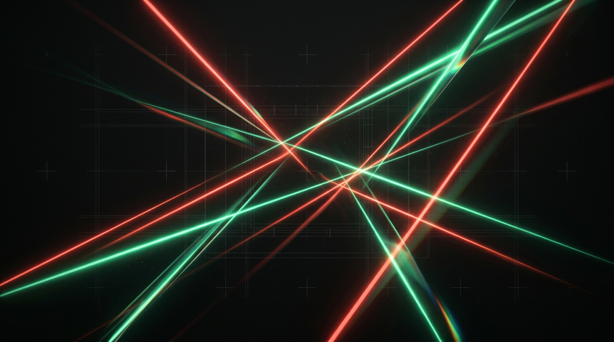

機械生成の文体を削り、書かれた事実だけを残す。
原文にない事実は1文字も足さず、数値・URL・コードブロックの生存を機械的に保証する日英対応エージェントスキル。
ttl_seconds = 300 を勝手に「数分間」へ丸めるCON-01）は全文削除STR-01）や反復まとめ（STR-02）を解体し本題へ直結code_block (SHA-256完全一致・編集絶対禁止)inline_code / number (符号・指数・全角数字まで照合)url (リンク先完全保持) / footnote (参照と定義の対)Information / Substitution / Reader / Support の4テストを実施。別製品に置き換えても成り立つ空疎な文や無出典の装飾統計を言い換えず削除。
cues.py が11種の構造キューを行番号付きで自動抽出。予告開幕、反復まとめ、機械的な3項目リストを解体し散文へ。
Wikipedia「Signs of AI writing」、PubMed抄録研究、日本語AI文体分析に基づく語彙・チャット残骸・太字/ダッシュ密度・文末連続を解消。
--genre docs/api.md=reference

1. code_block
2. inline_code
`ttl_seconds` 等の設定名や3. number
-10、10⁻³、全角数字まで4. url
5. footnote
[^1] と末尾定義を
外部パッケージ依存ゼロ。make link 1つでお使いのコーディングエージェントに導入し、/deslop または単体CLIで今すぐ検査・推敲を開始できます。